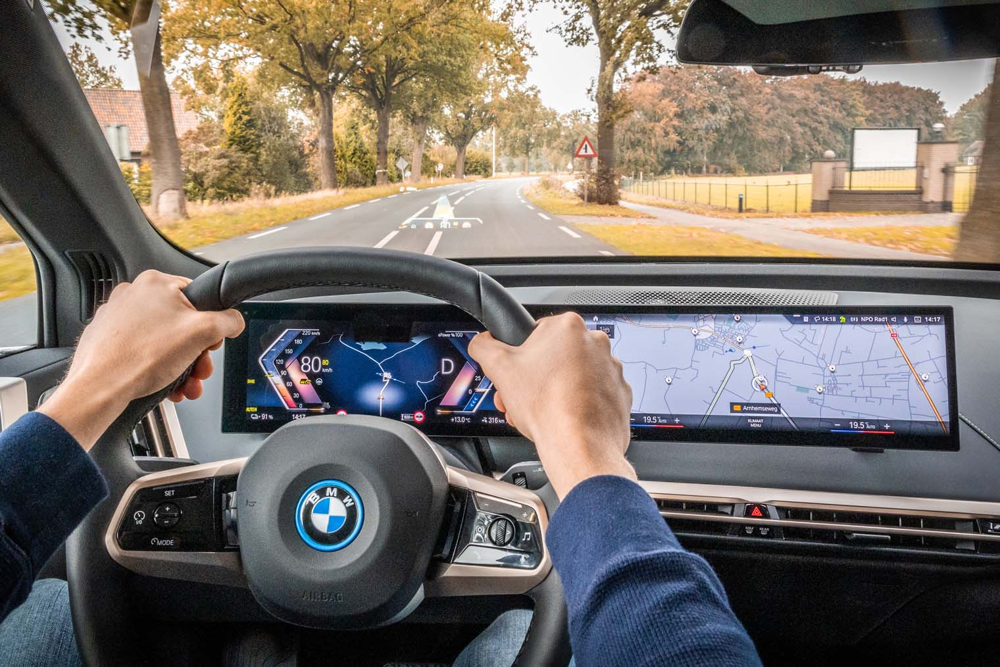

De BMW 7 serie
Ontdek hem bij Ekris.
Proefrit aanvragen Offerte aanvragenOntdek hem bij Ekris.
Proefrit aanvragen Offerte aanvragenIn luxe onderweg
In de BMW 7 Serie (G70) geniet u van ieder moment op de weg. Kenmerken voor de BMW 7 Serie zijn maximaal comfort, uitmuntende prestaties en een zelfbewuste uitstraling. De BMW 7 Serie is het vlaggenschip van BMW en dat bewijst hij met zijn exterieur en interieur. De BMW 7 Serie baant volledig nieuwe wegen naar puur rijplezier, ongeëvenaard comfort voor lange reizen en een digitale belevingswereld van topklasse.
Bekijk hier de prijzen van de BMW 7 Serie:
| Kopen vanaf | € 126.215 | ⓘ |
|---|---|---|
| Private lease | € 2.199 | ⓘ |
| Financieren | € 1.118 | ⓘ |
| Operational lease | € 1.799 | ⓘ |
| Netto bijtelling | € 844 | ⓘ |
Een strak lijnenspel
Wat direct opvalt aan de BMW 7 Serie is de markante voorzijde die het zelfverzekerde karakter benadrukt. De vernieuwde BMW Iconic Glow nierengrille is standaard en zorgt voor een herkenbaar aangezicht in combinatie met de dubbele ronde koplampen. Het zijaanzicht van de BMW 7 Serie straalt een en al elegantie uit. Ook de achterkant van de BMW 7 Serie is vernieuwd. De slanke LED achterlichten scheppen een beeld van minimalistische elegantie en zijn ver doorgetrokken in de flanken. Daarnaast is dit de grootste BMW 7 Serie tot nu toe met een lengte van 5.391 mm, een breedte van 1.950 mm en hoogte van 1.544 mm.

Een geweldige beleving.
De BMW 7 Serie nodigt uit tot lange comfortabele ritten in volledige luxe. De cockpit van de BMW 7 Serie is uitgerust met minder knoppen, schakelaars en toetsen vergeleken met zijn voorganger. Het stuurwiel en de transmissiehendel zijn volledig opnieuw ontworpen. Wat ook volledig nieuw is in de BMW 7 Serie is de BMW Interaction Bar, een combinatie van designelement en een nagenoeg onzichtbaar bedieningselement.
Een bestuurdersgerichte cockpit met alles binnen handbereik.
Multifunctioneel middenconsole inclusief nieuw ontworpen tranmissiehendel.
Naast een prachtig designelement ook een functioneel bedieningselement.
Een home cinema achterin met het 31,3" touchscreen BMW Theatre Screen.
Het juiste adres.
Bij Ekris verdient iedere BMW de aandacht die het nodig heeft. Koopt u bij Ekris een nieuwe BMW? Dan is goed onderhoud belangrijk, zo geniet u maximaal van uw nieuwe auto. Wij benaderen u wanneer uw BMW toe is aan onderhoud en komen deze kosteloos halen en brengen.
Lees ons verhaal.Maak uw BMW persoonlijk
De BMW 7 Serie is leverbaar met een plug-in- hybride motor, dieselmotor of elektrische motor als BMW i7. Kiest u voor een hybride BMW 7 Serie, dan geniet u van maximaal 89 kilometer aan elektrisch rijplezier. Bekijk hier welke motorisering het beste bij uw wensen past.
| Vermogen van de verbrandingsmotor in kW (pk) | 360 kW / 489 pk |
|---|---|
| Acceleratie 0 naar 100 km/u | 4,9 sec |
| Elektrische actieradius | Tot 89 km |
| Vermogen van de verbrandingsmotor in kW (pk) | 420 kW / 571 pk |
|---|---|
| Acceleratie 0 naar 100 km/u | 4,3 sec |
| Elektrische actieradius | Tot 84 km |
| Vermogen van de verbrandingsmotor in kW (pk) | 210 kW / 286 pk |
|---|---|
| Acceleratie 0 naar 100 km/u | 5,8 sec |
| Elektrische actieradius | 6,4 - 6,1 |
In 1977 werd de allereerste BMW 7 Serie geïntroduceerd. Het was een model wat dynamische sportiviteit in combinatie met moderne technologie en elegante luxe van het hoogste niveau belichaamt. Meer dan 40 jaar later introduceert BMW de zevende generatie BMW 7 Serie (G70). Dit is het gloednieuwe gezicht van klasse, pure elegantie en vooruitstrevende technologie. Op onze voorraadpagina vindt u naast de nieuwste BMW 7 Serie ook de zesde generatie 7 Serie.
De zesde generatie BMW 7 Serie (G11) werd vanaf 2015 tot en met 2022 geproduceerd. Dit model bracht de beste rijdynamiek naar voren had een buitengewoon luxe uitstraling. Deze BMW 7 Serie kwam ook nog als lange, limousine variant. Bij de. facelift in 2019 krijgt de BMW 7 Serie een aanzienlijke boost in het design. Zo heeft deze facelift een grotere nierengrille welke samen met de aangepaste koplampen de breedte van deze luxe sedan extra benadrukt.
Bekijk voorraadIs dit uw nieuwe BMW?
Heeft u interesse in de BMW 7 serie? Bekijk onze huidige voorraad of vraag direct een vrijblijvende offerte aan. Liever in het echt bewonderen? Kom dan eens langs bij één van onze vestigingen. Wij geven u graag meer informatie.
Bekijk voorraad. Offerte aanvragen.Voor een scherp all-in maandbedrag heeft u een gloednieuwe BMW voor de deur staan. Tarief is afhankelijk van de looptijd en kilometrage. Zelf kiest u de kleur, pakketten en opties.
Lees meerVoor een vast bedrag per maand least u zakelijk een gloednieuwe BMW. U kunt uw leaseovereenkomst uit breiden met een tankpas of winterbanden. Na afloop heeft u het recht van koop.
Lees meerZakelijk een nieuwe BMW kopen maar liever geen grote eenmalige investering? U betaalt de BMW met een vast bedrag per maand tegen een vooraf vastgestelde looptijd en rente terug.
Lees meerParticulier een nieuwe BMW kopen maar liever geen grote eenmalige investering? U betaalt de BMW met een vast bedrag per maand tegen een vooraf vastgestelde looptijd en rente terug.
Lees meer